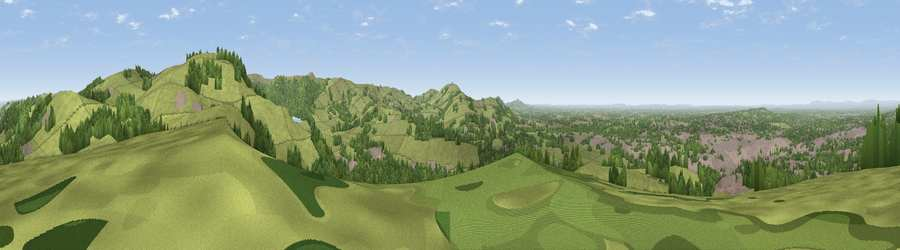

Viewpoint near Langley
#5291 in England · top 3% of its area beats it · near LangleyWhere it is
The exact computed spot (SJ 93400 72425). Click the marker for map links.
The view, rendered

A 360° render of this exact spot computed from the terrain model, tree cover and land cover — summer colours, afternoon light, calibrated against photographs of famous viewpoints. Real trees, hedges and buildings will differ in detail.
The panorama
Grey silhouette: terrain skyline in each direction (720 bearings, Earth curvature and refraction included). Dashed green: skyline with trees (+15 m) and buildings (+8 m) as obstacles. Blue strip: how far the ground is visible on each bearing.
Where the view opens
Wedge length = distance to the farthest visible ground on that bearing (vegetation-aware). Rings at 10, 25 and 50 km.
What fills the view
57% grassland · 29% woodland · 13% built-up · 1% cropland
Angular shares of the visible panorama (visual magnitude), not map area. Landscape diversity 0.44 (0–1 Shannon).
Key numbers
More beautiful places nearby
The staircase of upgrades: each row has a higher view potential than everything closer. Driving times are estimates from straight-line distance, calibrated against real road routing — check an actual route before setting out.
| Place | Direction | Drive | Score |
|---|---|---|---|
| Viewpoint near Langley | E · 1 km | ~4 min | 71.5 |
| Viewpoint near Langley | ENE · 3 km | ~7 min | 71.6 |
| Croker Hill | S · 5 km | ~11 min | 72.7 |
| Cats Tor | ENE · 7 km | ~15 min | 72.8 |
| Viewpoint near Timbersbrook | SSW · 9 km | ~18 min | 74.4 |
| Viewpoint near Mow Cop | SSW · 16 km | ~29 min | 78.9 |
| Viewpoint near Mow Cop | SSW · 17 km | ~30 min | 80.2 |
| Viewpoint near Harthill | WSW · 46 km | ~66 min | 80.5 |
53.24880, -2.10037 · source: screening · position refined by local search. Computed location — check access rights before visiting.